Economic development
Coordinate and promote economic activity in line with the Gulf Provincial Government's approved development strategies.
Gulf Province · Papua New Guinea
GEDA is the Gulf Provincial Government's lead body for economic development, investment facilitation and strategic infrastructure, making sure Gulf people share fully and fairly in the opportunities ahead.
01 · Who we are
The Gulf Economic Development Authority (GEDA) is the Gulf Provincial Government's lead body for economic development. Its mandate is to coordinate and promote economic development, investment facilitation and strategic infrastructure growth within Gulf Province.
GEDA is the Provincial Government's platform for aligning private investment with provincial priorities, regulatory compliance and long-term social and economic outcomes. With the Papua LNG project moving toward a final investment decision, our work centres on making sure Gulf people, landowners and businesses take a real, safe and well-governed part in the opportunities it brings.
A prosperous and self-reliant Gulf Province, where Gulf people share fully and fairly in the wealth of their land, rivers and resources.
To coordinate economic development, facilitate investment and grow strategic infrastructure in Gulf Province, so that major projects such as Papua LNG leave lasting jobs, skills, businesses and services for Gulf people.
Coordinate and promote economic activity in line with the Gulf Provincial Government's approved development strategies.
Act as the government's single platform for investors, linking them with provincial priorities and regulatory requirements.
Grow the infrastructure that brings long-term social and economic benefits to Gulf communities.
02 · The Gulf agenda
Gulf Province is rich in land, rivers, forests, fisheries and petroleum. GEDA's work is guided by the Gulf Provincial Government's development plans, which aim to turn these resources into jobs, businesses and services for Gulf people.
Commercial agriculture and livestock, building on coconut, coffee and oil palm.
Grow the sector, with a target of 70% of catch processed onshore.
100% downstream processing of timber within the province.
Support resource sites, including the Papua LNG wellheads and pipeline.
Micro, small and medium enterprises, and district growth centres.
Add value to raw products in the province before they are sold.
Promote the Ihu Special Economic Zone and industrial hubs.
Kikori wharf, an Industrial Park, and a connected network of roads, rivers and waterways.
Develop tourism, including services for workers and visitors linked to the LNG projects.
Source: Gulf Provincial Government, Development Plans.
03 · The opportunity
Papua LNG will develop the onshore Elk and Antelope gas fields in Gulf Province. Gas will be piped to a new LNG plant at Caution Bay, next to the existing PNG LNG plant near Port Moresby.
| Partner | Interest |
|---|---|
| ExxonMobil (operator) | 34.1% |
| Kumul Petroleum & MRDC (State) | 22.5% |
| Santos | 21.0% |
| TotalEnergies | 20.0% |
| ENEOS Xplora | 2.4% |
Interests after the September 2026 change of operator from TotalEnergies to ExxonMobil.
At the Papua LNG Development Forum in September 2026, Acting Gulf Governor and GEDA Chairman Mr Morris Taudevin set out the province's conditions:
On 8 October 2026, Gulf and Central signed the Tier-One benefit-sharing agreement, giving Gulf 80% of project benefits.
04 · Flagship programme
Led by GEDA, the programme is building a verified register of skilled and semi-skilled Gulf people who can be mobilised for jobs on resource, construction, infrastructure and service projects.
| Area | Target |
|---|---|
| Gulf people living in Port Moresby (NCD) | 1,500 |
| Malalaua (from GEDA Headquarters) | 1,250 |
| Kerema town | 1,250 |
| Other wards, with Provincial NID Registrar support | 1,000 |
| Total Phase 1 | 5,000 |
05 · People and governance
Chairman
Chairman of GEDA. Also the Acting Governor of Gulf Province.
Managing Director
Leads GEDA's day-to-day work and chairs the Skilled Labour Mobilisation Steering Committee.
Management team
Reviews programme progress and major changes through the Steering Committee every fortnight.

Get in touch
Follow GEDA